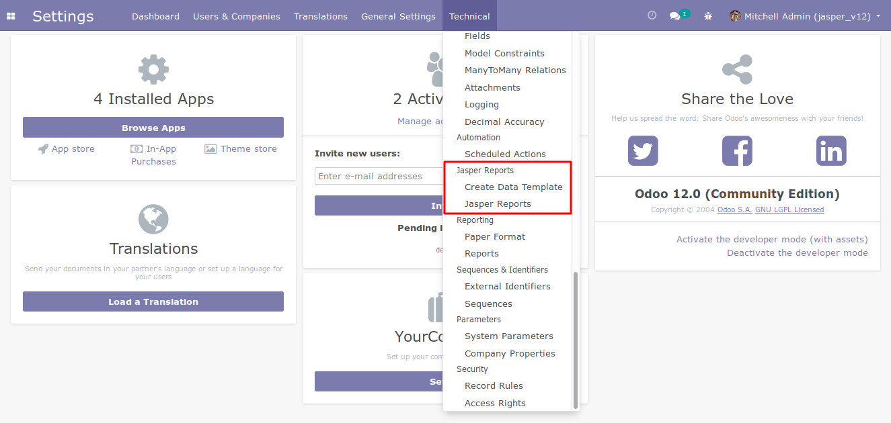
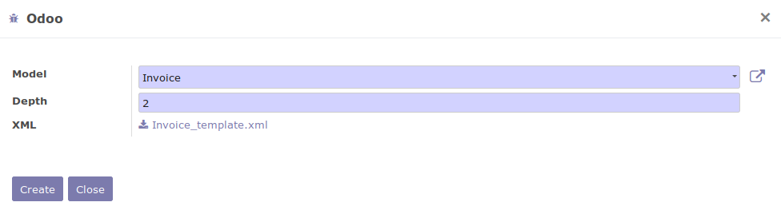
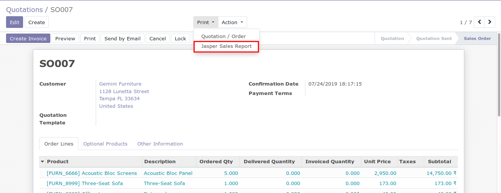
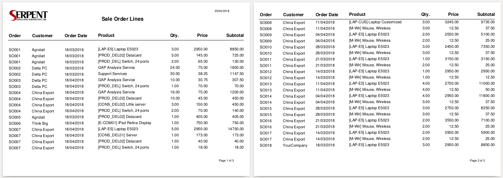

This Module Gives The Features for creating Jasper Reports
Configure Java path
In your Odoo web interface, under the Company Data -> Jasper Configuration, add java path.
Jasper Report Menu
In your Odoo web interface, under the Technical section, jasper reports menu is there.

Jasper Data Template
From your Jasper Menu, Create a jasper reports data template file.

Design Jasper Report
In Jasper Studio, import the .xml file which was generated from Odoo and design your Jasper Report as .jrxml.
Create Jasper Report
Create a jasper reports for your module with your .jrxml file.
Demo reports can be founded in jasper_reports/demo folder.
Print Jasper Report

Example Of Jasper Report

Jasper Report 'uuid' error
Error:
"Attribute 'uuid' is not allowed to appear in element 'jasperReport'."
Solution:
Solution 1: Open the .jrxml file created and remove uuid attributes.
Solution 2: Go to the Jasper Studio --> 'Window' --> 'Preferences'
Jasper Studio --> Compatibility --> In the drop down select/apply 'JasperReports 3.5.1'